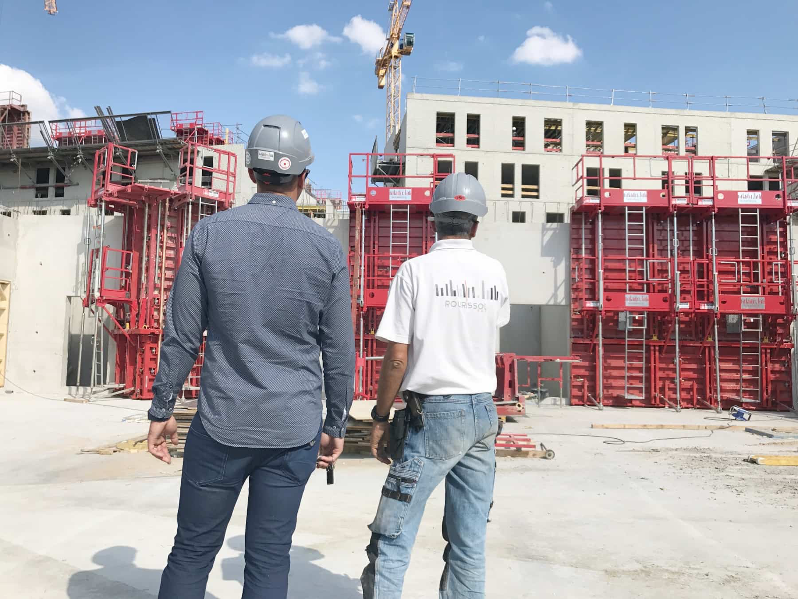

RSL / 01
2023
16,3
M€
Chiffre d’affaires
Rourissol accompagne les maîtres d'ouvrage publics et privés dans la réalisation d'ouvrages techniques et durables.
Les valeurs d’une entreprise familiale, les qualités d’un expert du bâtiment et du génie civil.

Riche de près de 80 salariés, l’entreprise Rourissol accompagne les bâtisseurs en proposant des prestations de génie civil, de gros œuvre en bâtiment, d’isolation acoustique ou de réparations d’ouvrages dans tout l’arc méditerranéen.
Au cours du temps, l’entreprise a su grandir et s’imposer comme un prestataire de confiance auprès de promoteurs indépendants, de groupes immobiliers, d’architectes ou de sociétés autoroutières.
Tout en plaçant sans discontinuer l’humain au cœur de ses préoccupations, l’entreprise Rourissol sait aussi faire preuve de réactivité et de rigueur pour mener à bien les missions qui lui sont confiées tout au long de l’année.
Cette approche lui permet de s’appuyer sur un personnel fidèle et de qualité, investi dans les chantiers de l’entreprise.
Conjugué à une haute exigence, quel que soit le type de prestations effectuées, ce savoir-faire contribue à la notoriété de l’entreprise sur le marché du bâtiment.
Des décennies d’expérience, des équipes engagées et plusieurs centaines d’opérations chaque année.
Des savoir-faire complémentaires mobilisés sur des opérations de bâtiment, de génie civil, d’isolation et de réparation d’ouvrages.
Gros œuvre et réalisation d’ouvrages pour des projets publics et privés.
02Des interventions techniques adaptées aux contraintes du terrain et des ouvrages.
03Des solutions dédiées notamment aux problématiques d’isolation acoustique.
04Intervention, remise en état et pérennisation d’ouvrages existants.
Des opérations menées sur l’ensemble de l’Arc méditerranéen, du bâtiment au génie civil, pour des maîtres d’ouvrage publics comme privés.
Rourissol intervient aux côtés de maîtres d’ouvrage publics et privés sur des opérations aux enjeux techniques variés.
Un projet de bâtiment, de génie civil ou une opération à étudier ? Échangeons sur vos besoins.